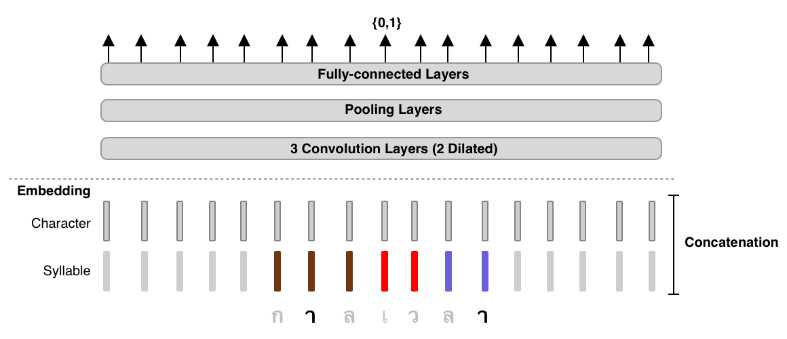

Fast and Reasonably Accurate Word Tokenizer for Thai (beta)¶



TL;DR: 3-Layer Dilated CNN on syllable and character features.¶
Installatation¶
pip install attacut
Usage¶
Command-Line Interface¶
$ attacut-cli -h
AttaCut: Fast and Reasonably Accurate Tokenizer for Thai
Usage:
attacut-cli <src> [--dest=<dest>] [--model=<model>]
attacut-cli (-h | --help)
Options:
-h --help Show this screen.
--model=<model> Model to be used [default: attacut-sc].
--dest=<dest> If not specified, it'll be <src>-tokenized-by-<model>.txt
Higher-Level Interface¶
from attacut import Tokenizer
atta = Tokenizer() # default model: attacut-sc
atta.tokenizer(txt)
AttaCut will be soon integrated into PyThaiNLP’s ecosystem. Please see PyThaiNLP #28 for recent updates